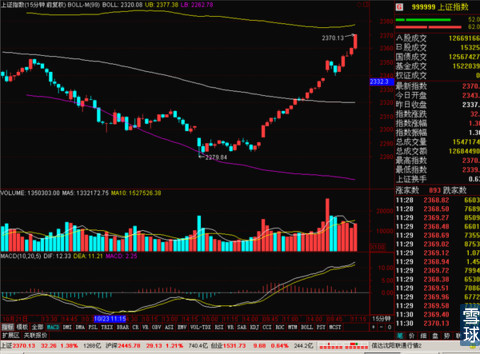
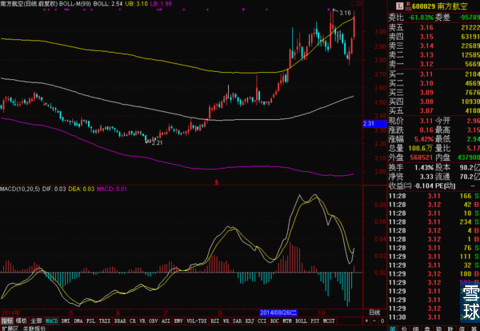
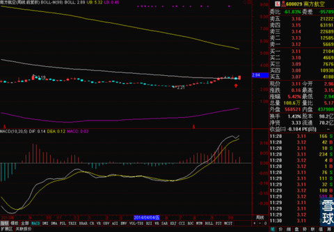
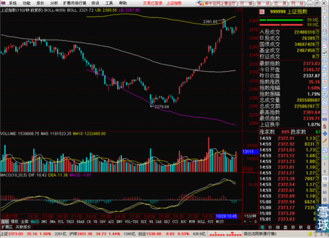
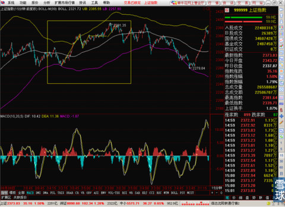
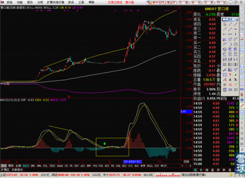
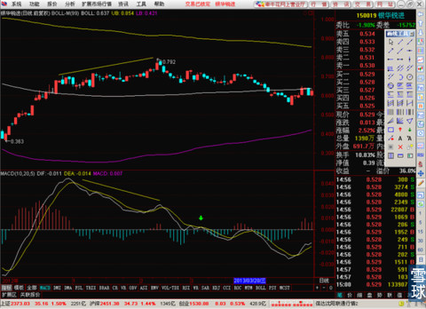

但是早上看了一眼集合竞价我就傻眼了，居然高开在2343这个位置。如果是个预计的一样，直接高开把BOLL中轨的压力甩在身后。

在10.11左右，突然回撤，也是正好踩在30分钟BOLL中轨2338之上，还差一点补好缺口的时候就拉升回来了。然后在证券和银行的率领上一路暴涨。
铁路基建不用说了，南北车合并的消息给了铁路基建极大的刺激。但是这也是一个让人不安的信号。市场有竞争也是正常，但是事关国家利益，调控和限制竞争可以，直接国家干涉两家大公司合并，是明显的国家机会主义抬头。一边推动市场化改革，一边在对国家利益暂时有干扰的地方强横干预，做这么不尊重市场的事情，简直是乱来。高铁出口价格如果被南北车合并控制住了，那么国内腻？铁总以后在南北车的采购成本不也跟着上去了么？实在是对这个事情无力吐槽了。
今天的上涨，在30分钟和60分钟上暂时还没有明显的压力位，最近的压力位是15分钟线上的BOLL上轨。指数点位是2377，这个位置是继续直接越过去，还是摸到之后回调，现在从技术角度也分析不出来，只能是提醒大家注意这个位置，还差不到7个点。

之前一段时间和大家说过的四大航空公司的股票，前几天跟着大盘调整了不少，这两天又涨了回来，目前来看日线有一定顶背离迹象，但是周线特别好，反复考验了周线BOLL中轨，而且支撑线不错。要是有耐心能持有6个月以上的，就找机会买点吧。
南航日线，

南航周线，

暂时先写这些。
---------------------------------上下午 分割线-------------------------------------------------
下午上证指数碰到2380之后，直接就回调了，和预测的差不多。所以说，大盘真不靠猜的，也不是所以预判都是没有的。技术指标就摆在那，主要是被很多人忽视了，太注意涨跌幅度，就像走路只看脚下不看路牌一样。今天又有小伙伴私信我，说要拜师，这个真不用，我常有的指标参数都告诉过大家了，其它的就都是长时间积累的对一些细节的把握，其实真没什么特别需要教的，关键是对自己这一套方法的信心。

我这几天的判断有什么神奇之处么？周一跌到MA60上了，就是因为MA888还没被有效跌破，MA60斜率向上，支撑力度好，我就猜一定不会继续暴跌。周二猜上涨是因为30分钟线底背离。今天猜2377左右折返是BOLL上轨压力线。这简直就和看图说话一样简单啊。所以你仔细想，怎么想，这个方法也不神秘。所以大家还是专门看盘就好了，不要把大盘想的那么喜怒无常，也别把技术分析想得过于神秘。
现在说回到正事上，既然今天在15分钟上轨遇到压力线回调了，那么明天怎么办？

我个人觉得，只要是遇到压力线回调，基本上不会直接再翻身上去，起码得找最近的支撑线靠一下再上，典型的就是15分钟线之前的那一轮走势现在可以拿来做参考。明天到周五可能是明天上午回撤到2356左右，找15分钟线MA20的支撑，然后下午涨回来到2370左右继续横盘，周四再横盘稍弱一点，等15分钟线的BOLL中轨追上来一点，周四下午或者周五上午再上涨。
这是一种推测，这样的话。上证指数就会在本周完成日线级别的MA60和MA888的金叉。日线现在大家都知道是顶背离的，但是如果按我的猜测这么涨的话，顶背离可能就被修复了。给大家看一组对比图，就是MACD顶背离在0轴横盘修复的例子。

营口港就是个例子，它出现顶背离之后没有大幅下跌，原因就在于MACD停在了0轴这个关键位置上，连续的横盘之后消化了之前那个顶背离的压力，然后开始大涨。这是一种可能。
还有一种就是MACD下探到0轴以下才完成修复的。

现在上涨指数就正好是在这两个图里，绿箭头的位置。

金叉翻上去，横盘消化压力也可以。金叉失败掉头下去，MACD就0轴之下再修复也可能。所以明天和后天是关键的时间窗口，直接决定后面半个月的走势。目前来看，我稍稍倾向前一种，金叉之后横盘的走法。
所以这两天短线没跟上的小伙伴，明天不要着急开仓，看看这个位置怎么处理之后再决定。
PS，今天上午在0.512的价格买了一点银华锐进，不仅把之前0.528左右买的那部分的成本摊下来了，还小赚了一点。但是大家暂时不要跟着买，因为周线0.529这个关键位置还是没站稳，我就是为了救上次出货没出完的这点底仓才进的。明天上午价钱好可能就先卖了，之后看0.529这个价位的争夺情况再最后定。
有一些刚关注我的小伙伴，表示有时候看不明白我写的这个时间是怎么回事。
我简单说一下，我每天是中午更新一次，晚上收盘之后不重开帖子，还是在这个帖子里把下午的情况补充进去，所以一般都是上半部分是上午写的，和对下午的预测。下午以总结为主。以后为了方便大家，我会专门在上下文之间画上分割线。